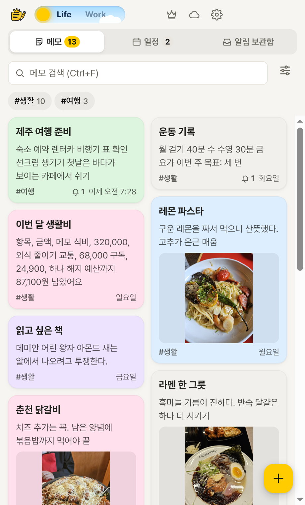
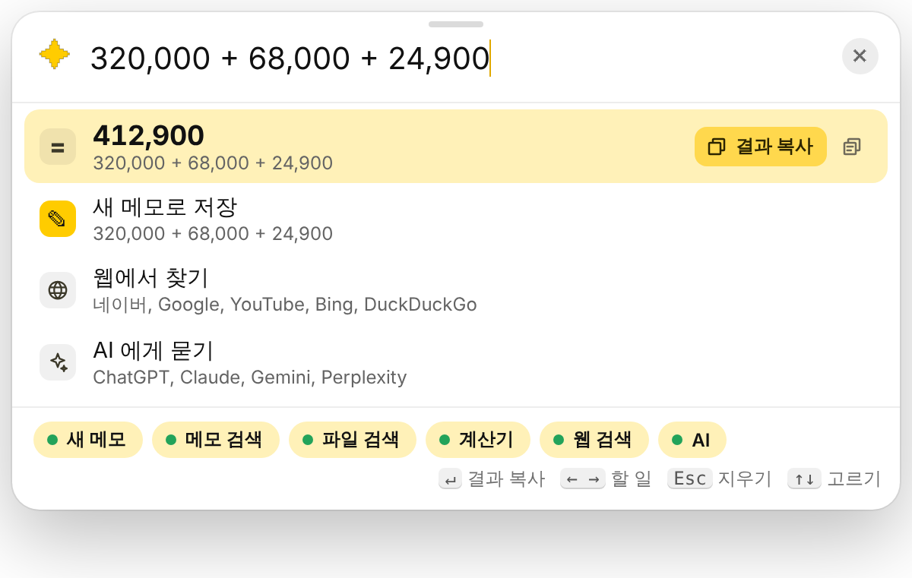
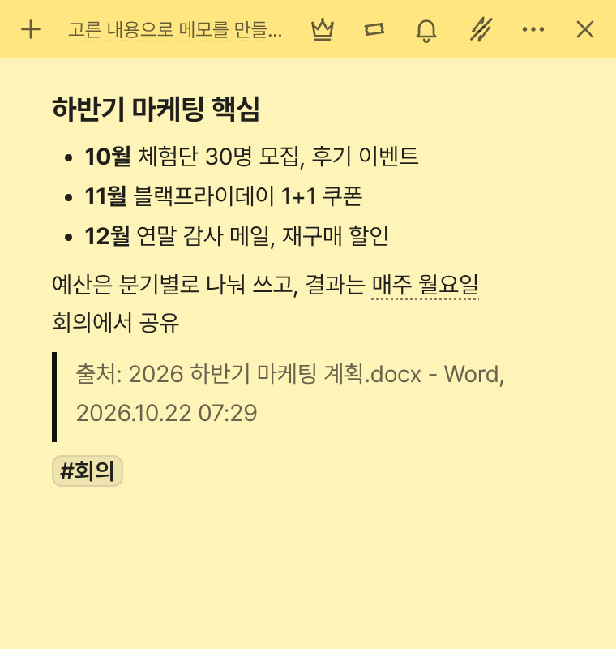
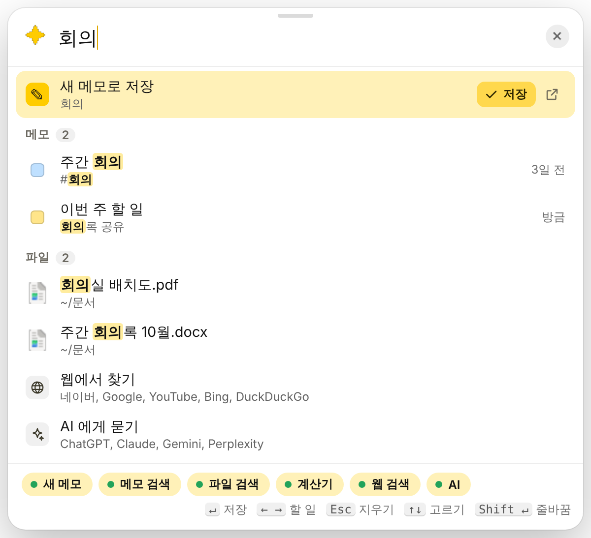
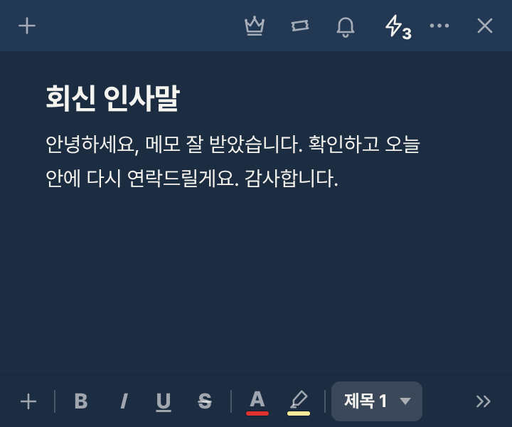
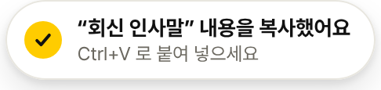

메모킹
넘겨 보세요
메모 앱인데,
이것까지 해요
흔한 메모 기능 말고, 메모킹에만 있는 10가지



어디서든매직키01 / 10
Ctrl+Alt+Space
창 하나로 다 해요
메모 쓰기, 내 메모와 PC 파일 찾기, 계산, 웹 검색, AI에게 묻기까지. 어느 앱을 쓰다가도 바로 떠요.

회의 메모와 회의록 파일이 한 번에
식을 쓰면 바로 계산, Enter로 복사
어디서든메모 단축키02 / 10
자주 쓰는 문구는
숫자 키 하나로
메모에 Ctrl+Alt+1~9를 정해 두면, 메일이나 메신저를 쓰다가 눌러 바로 복사. 붙여 넣기만 하면 돼요.


Ctrl + Alt + 3
어디서든빠른 메모, 영역 캡처03 / 10
보던 글을
출처까지 그대로
아무 앱에서나 글을 고르고 Ctrl+Alt+C. 서식과 출처가 붙은 메모가 돼요. 두 번 누르면 화면을 잘라 메모로.
두 번 누르면 영역 캡처
워드에서 고른 글 + 출처
메모 창메모 스택04 / 10
메모 여러 장을
서류철처럼
메모 창을 다른 메모 위에 끌어 놓으면 왼쪽에 색인 탭이 달린 한 창이 돼요. 탭을 눌러 넘겨 보세요.
메모 창왕관과 테이프05 / 10
늘 위에 둘지,
바탕화면에 붙일지
왕관을 누르면 다른 창에 가려지지 않고, 테이프를 누르면 바탕화면에 붙어 Win+D를 눌러도 남아요.
메모 창손 메모와 주석06 / 10
글 위에
펜으로 바로
표와 글 위에 동그라미, 밑줄, 화살표를 그어요. 글이 늘어나 줄이 밀려도 그림이 그 자리를 따라가요.
기록Work / Life07 / 10
일과 일상을
스위치 하나로
업무 메모와 일상 메모가 따로 보이고, 퇴근 뒤에는 업무 알림이 조용해져요.
기록알림 보관함08 / 10
지운 알림도,
카톡 알림도 남아요
알림 센터에서 지운 알림과 카카오톡 알림 창까지 모아 두고, 누르면 바로 메모로. 이 PC에만 저장돼요.
기록회상09 / 10
사진을 넣으면
달력이 앨범이 돼요
메모에 넣은 사진이 그날 칸에 모이고, 누르면 그날의 스크랩북. 한 달을 그림 한 장으로 남길 수도 있어요.
내 데이터내 드라이브의 파일, AI 연결10 / 10
내 메모는
내 드라이브의 파일
메모 하나가 파일 하나라 앱에 갇히지 않아요. Claude, ChatGPT, Gemini가 내 메모를 찾고 정리하고 남겨요.
내 드라이브 메모킹
- 제주 여행 준비.md여행
- 주간 회의.md회의
- 출시 준비.md업무
- 이번 달 생활비.md생활
- 하반기 마케팅 핵심.md회의
- 춘천 닭갈비.md여행
Claude 데스크톱에 연결됨
메모킹
PC와 휴대폰에서
같은 메모를
Windows PC와 안드로이드 휴대폰이 같은 메모 폴더를 써요. 설치 링크는 프로필에 있어요. 저장해 두고 하나씩 써 보세요.
Windows PC설치하면 알아서 업데이트,
알림 영역에서 늘 대기
안드로이드Google Drive로 PC와 같은 메모,
녹음하면 바로 받아쓰기